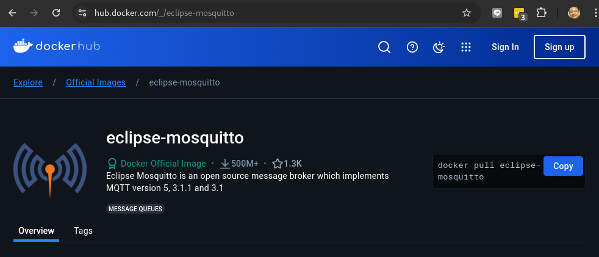
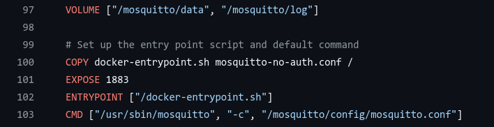
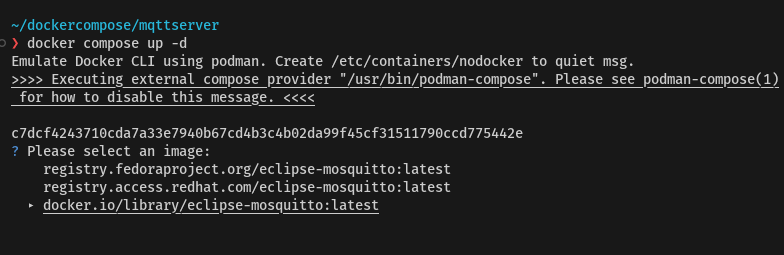
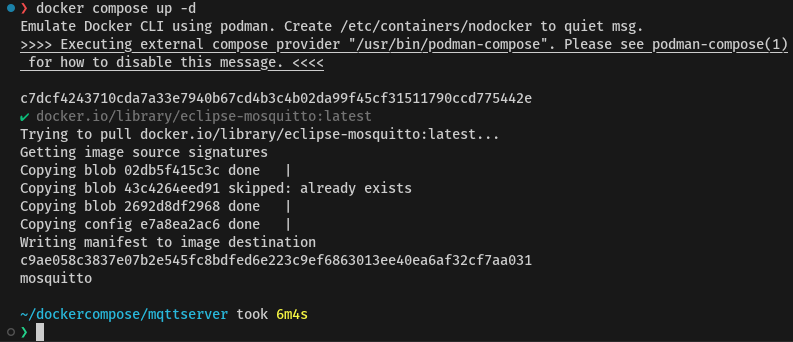
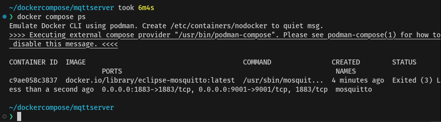
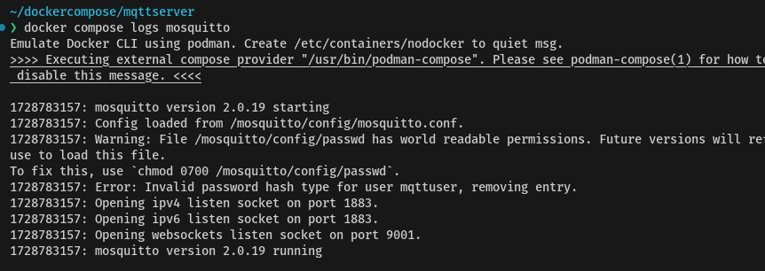

mqtt server
Step 1 Create folder
mkdir mqttserver
code docker-compose.yml
Step 2 Create file docker-compose.yml
services:
mosquitto:
user: "0:0"
image: eclipse-mosquitto:2.0.19
hostname: mosquitto
container_name: mosquitto
restart: unless-stopped
ports:
- "1883:1883"
- "9001:9001"
volumes:
- ./config:/mosquitto/config:Z
- ./data:/mosquitto/data:Z
- ./log:/mosquitto/log:Z
Create file /config/mosquitto.conf
allow_anonymous false
listener 1883
listener 9001
protocol websockets
persistence true
password_file /mosquitto/config/passwd
persistence_file mosquitto.db
persistence_location /mosquitto/data/
log_dest file /mosquitto/log/mosquitto.log
log_dest stderr
Create file /conf/passwd keep username and password
mqttadmin:1234P@ssword
https://hub.docker.com/_/eclipse-mosquitto

Directories Three directories have been created in the image to be used for configuration, persistent storage and logs.
/mosquitto/config
/mosquitto/data
/mosquitto/log
Click Dockerfile

- CMD ["/usr/sbin/mosquitto", "-c", "/mosquitto/config/mosquitto.conf"]
Run Docker compose up
docker compose up -d

Select docker.io registroy then enter. docker compose will download image

Run Docker compose ps

Step 3 Security Configuration
- create username and password
Set the Mosquitto configuration file is /etc/mosquitto/mosquitto.conf
- Create file
/mosquitto/mosquitto.confin project folder
code ./mosquitto/mosquitto.conf
paste this text to file content:
allow_anonymous false
password_file /etc/mosquitto/passwd
Explain: - allow_anonymous false Disables anonymous connections - password_file /etc/mosquitto/passwd location of password file
Step 4 Edit the password file with this command:
code ./mosquitto/passwd
Enter username/password in format:
username:password
Example:
mqttuser:P@ssw0rd
Step 5 Mosquitto User: Encript the password

docker compose exec mosquitto sh
Run command mosquitto_passwd in container
docker compose exec mosquitto mosquitto_passwd -U /mosquitto/config/passwd
docker compose exec mosquitto sh
/# cat /mosquitto/config/passwd
/# exit
Example:
mqttuser:$7$101$n9DHRNjU7WBkloMP$t9w87LhuY5PAkIiWpq8jrT7oDW/ALECt+4ICzRjn/G9TAaFqeBt2f2WDC8HGJCgOQ1zEBK/ERxjWWRElnp9Dlw==
You will see the password encrypted. Step6 Restart Mosquitto
docker compose restart
Step7 Add user Add other use
docker exec mosquitto mosquitto_passwd -b /etc/mosquitto/passwd user password
https://stackoverflow.com/questions/78590294/how-to-fix-user-creation-issue-in-eclipse-mosquitto-docker-deployment-without-re
https://medium.com/@tomer.klein/docker-compose-and-mosquitto-mqtt-simplifying-broker-deployment-7aaf469c07ee